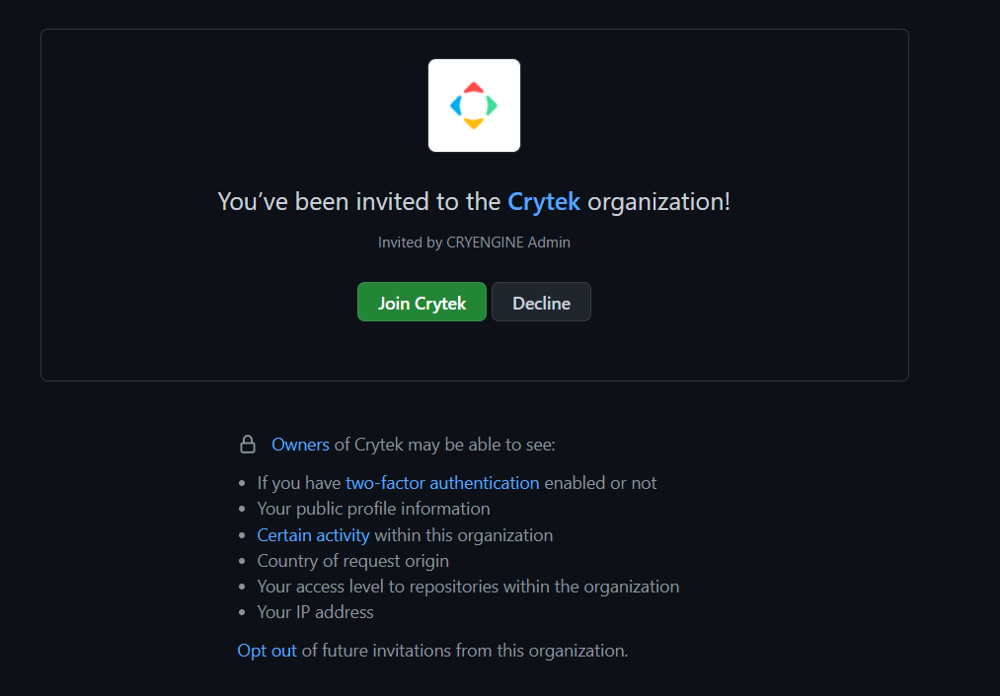
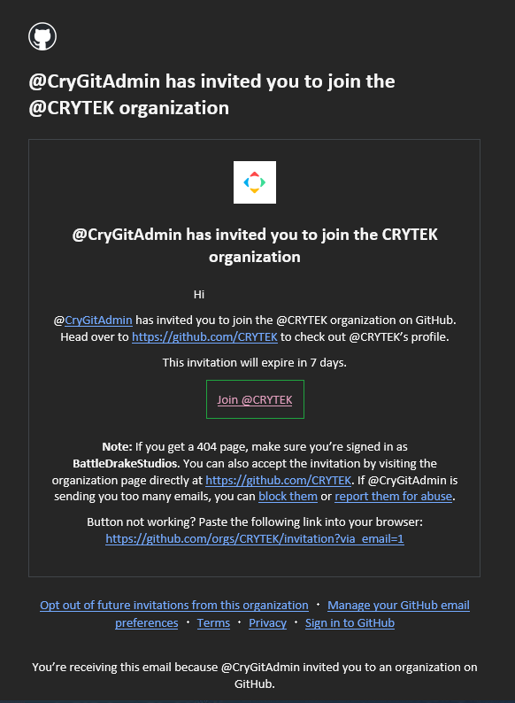
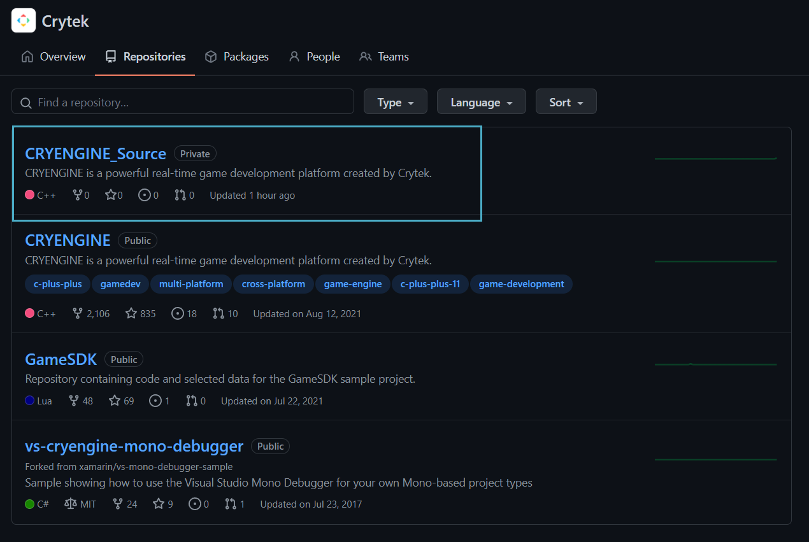
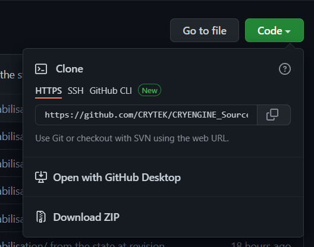

With CRYENGINE 5.7 LTS, Engine source code is now being distributed via a private repository for registered developers, access to which is only provided on request.
Before proceeding to make your request, please make sure that you have:
- A CRYENGINE account.
- An account with GitHub (sign up here)
- Installed the GitHub Desktop for Windows on your PC (available here)
Requesting Access to Source Code
- Navigate to the contact form on the CRYENGINE website and log in to your CRYENGINE account by clicking the
icon in the top-right corner of the page. Once logged in, fill in the contact form using the following template:
Hello, I would like to formally request access to CRYENGINE 5.7 LTS source code via GitHub. My GitHub username is [Your GITHUB NAME]. Kind regards, [NAME]Please make sure that you include your GitHub username in your message.
Following this, please wait for us to respond to your request via e-mail. 
E-mail invitation to join Crytek on GitHub
Add contact@cryengine.com to your e-mail list so that our e-mails don't miss you.
Downloading Source Code
Once your request has been approved via e-mail as explained above, simply navigate to the GitHub website, log in using your GitHub account and accept the invitation to CRYENGINE's Source Code.

GitHub invitation
This will open the CRYENGINE_Source repository.
Alternatively, once your request has been approved, you can access the Source Code as follows:
- Navigate to your GitHub account, click on your avatar and select Organizations.
- Select the Crytek → Repositories → CRENGINE_Source option.

CRYENGINE_Source
To clone the CRYENGINE_Source repo:
- Open the repo, and select the Code → Clone option from the dropdown at the top.

Code → Clone - To complete the process, you may then do any one of the following:
- Select the Download ZIP option and unzip the ZIP file in the location of your choice;
- Click Open with GitHub Desktop, and then navigate within the application to the directory you'd like it cloned to, or;
Manually copy the the HTTPS URL/SSH/GitHub CLI into your GitHub application, and then navigate to which directory you'd like it cloned to.
It is strongly recommended that if you want to compile Engine code, you should save your repo on an SSD.
You should now be able to see your cloned repo both in the desktop app and the GitHub website.
In order to obtain repositories for consoles you need to be a Sony PlayStation or Microsoft Xbox certified Developer. For more information about getting registered see here.